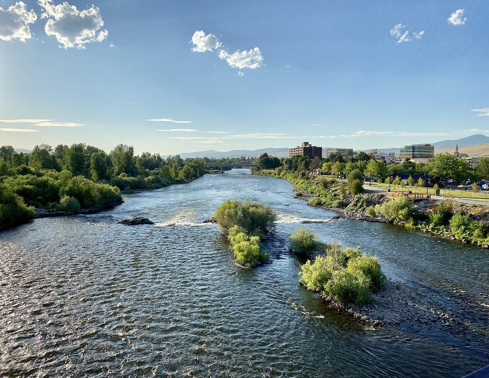
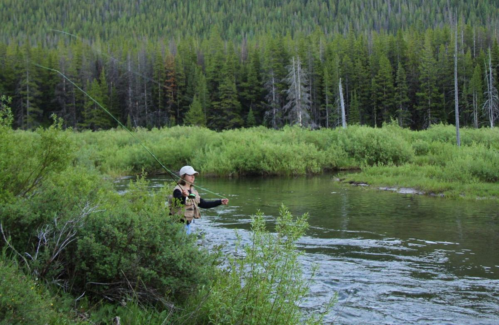
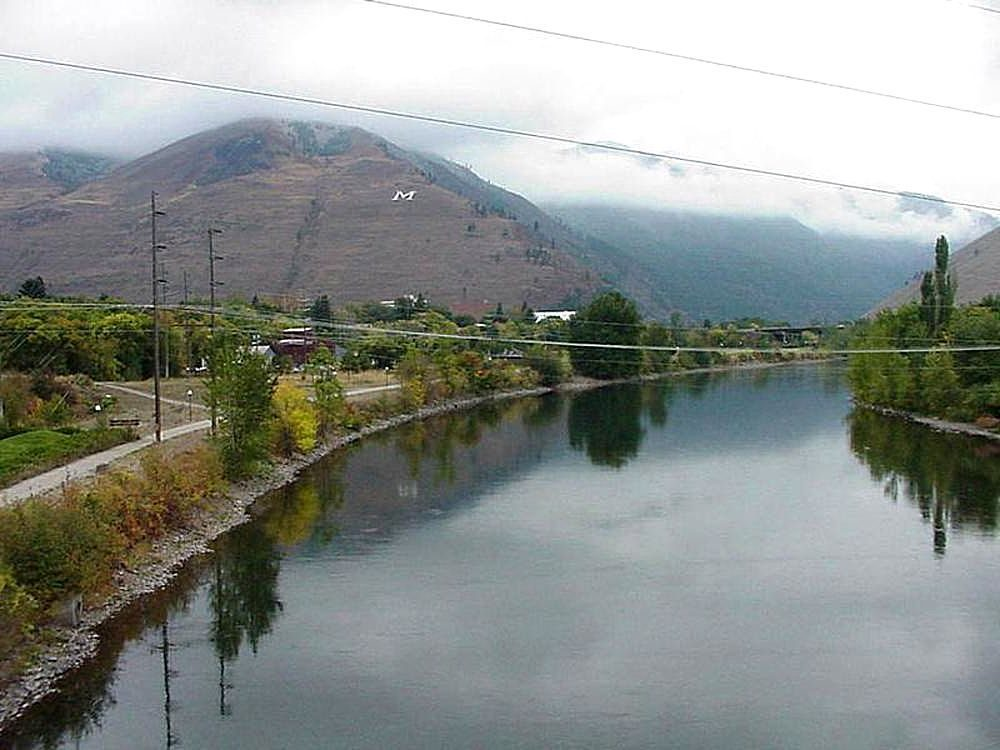

New Moon
North Higgins, downtown
The flagship. Where to bring your parents.
Moon Manager: June Halvorsen

Roasted on the Northside since 2014
Seven cafes, two old roasters and one river town. We've been waking up Missoula since before the sun gets over Hellgate.
How it started
Odalys Finch spent nine summers as a wildland firefighter and came off night shifts with strong opinions about gas station coffee. Teodor Marsh guided fly fishing trips on the Blackfoot and the Clark Fork, and needed his clients awake before sunrise.
They met at 4 AM in 2012, at a gas station on Reserve Street, complaining about the same pot. Odalys had been roasting beans in a hand cranked popcorn popper over a camp stove. Teodor tried a cup and asked to buy a pound before he'd finished it.


The Moonlight Window
In the winter of 2014 they rented the back of Walt Dreier's closed bicycle shop on the Northside. Walt charged $200 a month and took the rest in coffee. The roaster, bought used from a church in Butte, wouldn't hold a flame until the third Monday of February, in the middle of a cold snap. We still close every cafe on that day.
Their first customers were river guides and night shift nurses, served through the back window before dawn. The window only opened while the moon was still up, and that's how we got our name.
That spring a great horned owl with one ear missing moved into the rafters and refused to leave. Captain Biscuit stayed six years, dropping pine cones on the roaster whenever a batch ran long. Anneke Lund painted his portrait, and it hangs in every cafe. He flew off in 2020. Nobody has replaced him and nobody will.
Seven cafes, one moon
North Higgins, downtown
The flagship. Where to bring your parents.
Moon Manager: June Halvorsen
Hip Strip
A former record store. The floor still slopes toward the jazz section.
Moon Manager: Dez Okafor
University District
Don't come on a Griz game day unless you mean it.
Moon Manager: Tobias Ng
Rattlesnake
Coffee at the trailhead. Dogs inside. Bears outside.
Moon Manager: Ruth Kowalczyk
East Missoula
Open all night at the mouth of Hellgate, for truckers, nurses and fire crews.
Moon Manager: Arlo Pettibone
Frenchtown
Our only drive through, right off I-90.
Moon Manager: Wren Castellano
Hip Strip
The deck over the Clark Fork. Good luck getting a seat in July.
Moon Manager: Mika Sandoval
Float Day
On the second Saturday of July, every cafe closes at noon and all 212 of us float the Clark Fork together. One percent of every bag of beans goes to the Five Valleys River Fund, for streamside cleanup. And Teodor still teaches a free casting lesson for staff, the first Sunday of every month from May through September.
Who's who
Our whole handbook is open to read. Beanhands can also ask it questions, day or night.
You read all the way down here, so you've earned the truth. Moonbean isn't real. Missoula is, and it's great, but there are no cafes to visit, and everyone above is invented. Any resemblance to a real business or person is an accident.
This is a side project from Taylor Dorsett, who is building LLMs and LLM projects. The company is the setting. The Ask tab is the point, a real chatbot that answers from this handbook. Taylor built it to use RAG (retrieval augmented generation), so it finds the handbook sections that match your question and answers from those. Ask is open to everyone, with a small monthly budget. If it takes a break, the handbook is always here. The code is on GitHub.
Photos from Wikimedia Commons. Clark Fork River, Missoula, MT by w_lemay, CC BY-SA 2.0, cropped. Clark Fork, Missoula by Jon Sullivan, public domain. Meadow Creek Fly Fishing by the US Forest Service Northern Region, public domain. The people and places pictured have nothing to do with this project.


.jpg){kind=link}